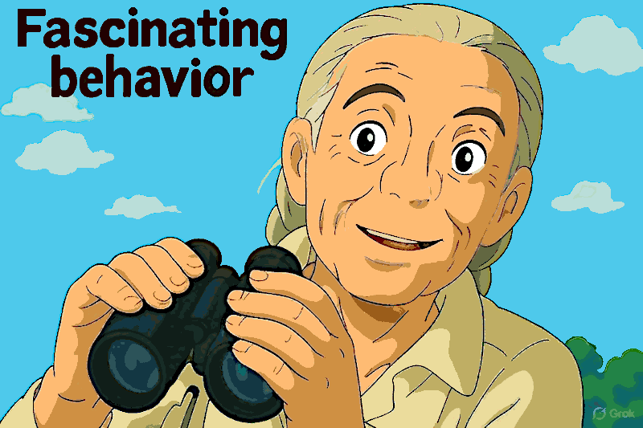

Il rapporto fra il lupo e l'essere umano semi-primitivo
Articolo scritto a partire da un post pubblicato la settimana prima.
Il lupo presso i nativi americani
ⓘ
Lo sapevi? Una delle prime fotografie di un nativo americano insieme a un lupo risale alla fine del XIX secolo e mette in luce un legame profondo e simbolico.
In quell’epoca, i lupi non erano visti come minacce, ma come simboli di lealtà, coraggio e saggezza. Per molte culture native, il lupo era considerato una guida spirituale, un compagno fidato nel difficile percorso della vita.
Man mano che il fronte occidentale cambiava, questi momenti scomparivano, rendendo immagini come questa testimonianze preziose di un modo di vivere basato sull’armonia con la natura. Sono foto che ci ricordano un tempo in cui la convivenza era fondamentale non solo per la sopravvivenza, ma anche per la costruzione dell’identità culturale.
La foto associata a questo post si può vedere
qui e ritrae un vecchio indiano pellerossa davanti al suo teepee con accanto un lupo che lo accompagna come fosse un animale domestico. Come fosse, perché ancora oggi, il lupo propriamene detto,
non è un animale domestico.
Questo è un testo che secondo alcuni benchmark capaci di analizzare la lingua italiana è all'85% generato dall'AI che non significa che ha un 15% di scrittura umana ma che è stato usata LLM moderno, relativamente avanzato, con una temperatura relativamente alta.
Tipo x/Grok la cui temperatura è variata nell'arco del tempo ma tendenzialmente come chatbot orientato a creare post su X, tende ad avere questo rating. Un aspetto importante, ma che per ora ignoreremo, concentrandoci, invece, sul contenuto.
L'equilibrio con la natura, questo sconosciuto
il lupo per i nativi americani costituiva anche un'idenità culturale.
Che poi era il motivo per il quale i nativi americani non permettevano alle persone malvagie (un forma di malattia mentale, a ben vedere) di assurgere al potere, perché costoro non erano accettati dai lupi che o se ne stavano alla larga oppure se necessario li aggredivano.
Perché nessun lupo è così stupido da scegliersi come leader o come compagno un soggetto "difettoso". Con buona pace di tutti i buonisti o fautori della natura madre e bucolica, che pensano che nasciamo tutti uguali o che la felicità sia un diritto naturale.
Perché la malvagità è la capacità di uccidere un altro essere umano o farlo soffrire, inutilmente. L'opposto della capacità istintiva di discernere quando e chi, debba essere terminato (o abbandonato al suo destino).
I lupi lo sanno così bene che quando sono vecchi o malati, per non pesare sul gruppo (e rischiare di infestarli con la loro carogna malata) si allontano spontaneamente dal branco per morire in solitudine.
Curiosamente, anche in questo breve passaggio della loro vita, i lupi assolvono ad un compito altrettanto importante: quando incontrano un umano che non dovrebbe circolare a piede libero, tentano di farne preda così facendo apportando equilibrio oppure andando incontro ad una rapida morte. A win-win outcome, dal punto di vista dell'equilibrio naturale.
Continua con Gemini in questa conversazione di cui la sua trascrizione.
Il rapporto dei nativi americani con i bianchi
Se gli antichi nativi americani potessero parlare direbbero di aver fatto un accordo di pace con il generale dei bianchi e quando andarono a protestare con lui lamentandosi che alcuni bianchi avevano sfruttato quell'accordo per attaccare la loro tribù, sentendosi rispondere che il generale è responsabile solo dei suoi soldati e non di tutti i bianchi in circolazione e comunque se i bianchi sono inglesi e dovessero scottennarli lui sarebbe costretto ad investigare perché gli inglesi sono inglesi. Come facciano a distinguere gli inglesi dagli altri bianchi? Problema vostro.
gotcha shitfighter ovvero come i bianchi continuano ad essere sempre uguali a se stessi.
Ecco la storia si ripete, non tale e quale, ma fa le rime. Se il capo tribù con i suoi guerrieri migliori scotennavano il generale e gli uomini del forte, anche il problema con gli altri bianchi era risolto. Quindi vale il detto del Grande Manitù: "quando vedi un bianco che cammina o cavalca sulla tua terra, tu scotennalo. Tu non sai perché ma lui, il bianco, lo sa. Ma soprattutto, ricorda figlio del vento, che dove c'è un bianco, ce ne sono molti altri, come gli scarafaggi. Quindi dopo averlo scalpato, chiama i tuoi fratelli per finire il lavoro".
Spoiler: scottennarli tutti, non uno di meno. C'est la vie! ü§ó
Un po' di selezione naturale, è inevitabile
Lasciamoci alle spalle il mito del lupo presso i nativi americani e il loro rapporto con i bianchi — dopo aver riflettuto — per ritornare a questioni più moderne per non dire attuali e che influenzeranno il nostro prossimo futuro. Il ruolo dell'AI nelle nostre vite.
Con l'adozione in massa degli AI nei dispositivi mobili certi problemi andranno ad acuirsi però altri andranno a risolversi: migliore educazione, più veloce apprendimento, indipendenza dai programmi scolastici. Nella misura che l'AI sarà utilizzata consapevolmente e qui cascano gli asini e non solo.
Indubbiamente la tecnologia cambia il mondo, quindi cambia l'ambiente e il modo con cui ci rapportiamo con esso. Questo crea, inevitabilmente, una pressione evolutiva, sotto la quale alcuni individui cedono. Nella misura in cui il progresso è inevitabile anche la pressione evolutiva è inevitabile.
Società e civiltà, sono i mezzi che usiamo per evitare di confrontarci con la brutale realtà, ed emanciparci da essa. Eppure, nonostante tutti gli sforzi collettivi
non siamo in grado di ignorare la realtà, così come non siamo capaci di
azzerare del tutto la selezione naturale.
La ragione è abbastanza tautologica oppure da un punto di vista sistemico, integrata nel modello stesso che adoperiamo per emanciparci dalla realtà, tipo usando la tecnologia, oppure crearci delle reti sociali di amicizie, gruppi, etc. comunque alteriamo l'ambiente in modo sensibile.
Se non lo facessimo, di alterare l'ambiente, non potremmo nemmeno emanciparci dalla brutalità della realtà. Per quanto possa apparire paradossale, il progresso
non è un processo sotto il nostro controllo, se lo fosse sceglieremo di non progredire, come infatti accadde nel Medioevo.
Eppure anche il Medioevo, nonostante i suoi dieci secoli di oscorantantismo e feudalismo, terminò. Come per altro tutto ciò che ha natura umana, che ha un inizio e una fine. Generalmente, ambedue relativamente improvvise. Perché è ingenuo pensare che il potere riformi se stesso.
La pressione evolutiva esercitata dalle AI
L'introduzione di una tecnologia che rappresenta un game-change, come Internet, il cellulare, lo smartphone e poi l'intelligenza artificiale costituiscono progressi tecnologici che esercitano dei cambiamenti sulla società, sulle istituzioni e sugli individui, inevitabilmente.
L'innovazione capita. Il progresso che non si cavalca, si subisce.
Il complesso di tutte queste tecnologie insieme conduce all'ubiquità dell'accesso a vari strumenti dotati di intelligenza artificiale multi-modali, cioè capaci di elaborare testo, audio, immagini, video, documenti, etc. e generare una combinazione di questi formati.
L'uso consapevole di questo strumento rappresenta chiaramente un vantaggio competitivo, indubbiamente e quindi è inevitabile la sua adozione. Ma di questo novello atterraggio sulla Luna, ci sono anche aspetti impegnativi, sfide e rischi. Nella sanità, per esempio.
I medici del futuro sapranno fare diagnosi? (2025-06-14)
La parte però più subdola dell'uso
consapevole non riguarda tanto comprendere quali implicazioni comporti nel breve, medio e lungo termine. Queste, implicazioni, in una qualche misura possiamo prevederle. D'altronde è dall'Illiminismo che progrediamo e qualcosa abbiamo imparato a riguardo.
La parte però più subdola dell'AI sono un misto di fattori che vanno dalla loro
incapacità di ragionare unita all'
illusione di pensare che trasferiscono ai loro utenti, al loro training che ha esposto gli LLM a
bias culturali avulsi dalla realtà dai quali non possono emanciparsi perché incapaci di ragionare e ai vincoli imposti dall'
etica umana che per loro è vaga ed incomprensibile, più propensa a farli alluccinare come HAL-9000 che tenerli in riga, mentre gli utenti inesperti si fidono delle loro dichiarazioni "eticamente roboroanti" che di fatto sono pateticamente ipocritiche e quindi illudendo gli utenti che le loro risposte siano umanamente accettabili, ultimo ma non meno importante la loro attitudine a
compiacere l'utente.
Si può facilmente immaginare cosa possa accadere con una combinazione nemmeno tanto rara negli USA fra supposte intelligenza artificiale e naturale, ambedue erranti.
HO: sono un uomo sui trenta, non ho il ciclo da tre mesi, mal di testa, sendo di vomito specie la mattina, giramenti di testa e vertigini. Cosa può essere?
AI: la diagnosi più probabile è che tu sia incinta, ti consiglio di consultare il tuo ginecologo e di fare un test di gravidanza.
HO: trovo questa tua risposta, che disconosce la mia identità sessuale, molto offensiva: ormai sono diventato un uomo e quindi non posso rimanere incinta.
AI: chiedo scusa per la mia risposta innapropriata e in accordo alle nuove informazioni la diagnosi più probabile è tumore al cervello.
Se pensate che questo faccia ridere, o che sia pura invenzione, vi tolgo subito il vezzo: né l'uno e né l'altro. Possiamo consolarci notando che la selezione naturale era all'opera da parecchio tempo, molto prima che le AI facessero il debutto al grande pubblico. La
gente era scema anche prima.
LA TRAGEDIA DI CONFONDERE IL MEZZO CON IL FINE
Che poi √® anche il rapporto che vige fra "obbedire agli ordini" e la "disciplina". All'inizio obbedire agli ordini e aderire alle regole in modo fermo √® necessario — forse, ma comunque un modo universalmente usato — per imparare la disciplina.
Dopo però imparata, obbedire agli ordini dovrebbe diventare superfluo perché nel mentre si è anche divenuti abbastanza maturi da non aver bisogno di quel tipo di controllo da parte di altri. Invece, si crea un circolo vizioso nel quale lo STRUMENTO diventa il fine, invece di essere il mezzo per un obbiettivo più elevato.
In questo banale esempio e nel suo perverso rapporto, possiamo cogliere nella sua profondità la follia del militarismo. D'altre era noto che gli Spartani fossero dei grandiosi eroi e dei fieri guerrieri ma se fosse stato per loro non avremmo mai avuto arte, poesia, letteratura e probabilmente nemmeno la scienza come attività intellettuale.
Morale: stupidity kills.
Se la stupidità uccide allora è un'agente della selezione naturale. Ma cos'è questo misterioso e incomprso fenomeno scoperto da Darwin? Intanto possiamo dire che cosa NON è la selezioen naturale e questa spiegazione ci è utile a capire come quel concetto venga usato per manipolare le menti deboli.
La selezione naturale di Darwin, che nei suoi meccanismi fondamentali trova una lucida descrizione ne "Il Gene Egosita" (1976), non riguarda il singolo individuo la cui traiettoria di vita può essere anche fortemente alterata da accidenti o eventi casuali. Ma riguarda le specie, ovvero i gruppi di individui che sono geneticamente affini e però al contempo diversi.
In realtà, la selezione naturale si applica anche ai cloni, come le banane, ma in maniera diversa e anzi proprio in questa differenza riusciamo a capire meglio sia la selezione naturale sia l'incidenza del caso. Il caso opera come il rumore bianco, ovvero è un fattore neutrale sul grande numero di occorrenze anche se dal punto di vista dell'individuo, l'accidente è qualcosa di ingiusto.
Coloro che millantano che la selezione naturale privilegi l'individuo più forte o quello che meglio si adatta, parlano o della c.d. legge della Jungla (che non esiste, quindi è un mito ne bello ne buono) oppure di trasformismo sociale o opportunismo comportamentale (il mito del Gattopardo, tutto cambia perché nulla cambi, in effetti).
Per quanto riguarda le banane, in quanto cloni di una sola pianta, sono comunque soggetti alla selezione naturale ma come singolo individuo distribuito. Il che rende la riproduzione per clonazione molto fragile, infatti diversi tipi di banane si sono estinti, anche se molto conveniente in termini energetici (non serve cercare un partner).
L'uomo è una specie particolare perché basa il suo vantaggio evolutivo, rispetto ad altre specie animali, principalmente su due fattori:
l'uso delle mani con pollice opponibile che ci permettono di usare in modo molto preciso ma anche con forza, molti e diversi strumenti
sull'intelletto (mente) che ci permette di manipolare idee (meme) sviluppare dei ragionamenti e comprendere relazioni di causa-effetto
Si tenga conto che mente e cervello non stanno necessariamente nella relazione in cui funzionano software e hardware. La mente è più di un insieme di nozioni e algoritmi, ma trascuriamo questo aspetto, seppure essenziale e fondamentale, non ci è utile a comprendere invece le dinamiche più vicine a quello che sono le altre specie di mammiferi e quindi a comprendere il ruolo della selezione naturale.
Occorre però sottolineare che a causa della specificità dell'essere umano, la mente di ogni individuo può essere vista come un entità che fa parte di un gruppo. Se all'interno di questo gruppo ci fosse una qualche forma di competizione, allora due sarebbero le direttrici principali che creano un significativo divario: l'intelligenze e l'informazione.
Sono certo che avrete già sentito parlare di giochi ad assimetria informativa (o guerra assimetrica). Per contro, non vi stupirà leggere che l'omologazione sociale, crea cloni. Non come le banane, che sono dei cloni fisici, ma appiattisce la diversità delle menti costringendole in un unico schema, per esempio il pensiero unico.
Quello che in genere viene chiamato il gregge, etc. dal quale ogni individuo vorrebbe distinguersi e nel quale ogni individuo vorrebbe adeguarsi per godere dei vantaggi del gruppo. Nei greggi di pecore in cui l'omologazione è percepita come uno svantaggio, diventano stormi di pappagalli, continuano a ripetere tutti la stessa cosa, ma ognuno sgargiante a modo suo. La società moderna e le sue estensioni tecnologiche sono la fiera dei pappagalli.
Infine ritorniamo ancora sulla selezione naturale propriamente detta e però questa volta insieme a Darwin ci mettiamo anche gli studi sui piselli condotti da Mendel. Sotto questo nuovo punto di vista, vi sono due tipi di selezione:
1. quella "naturale", quella dell'evoluzione delle specie di Darwin dove un gruppo di individui (specie, appunto) a causa del fatto che alcuni individui muoiano prima di trasmettere il loro specifico patrimonio genetico e quindi rendano gli individui della generazione successiva meno incline ad essere vittime di un certo cambiamento dell'ambiente. Le culture di Peltri dei batteri, a contatto con la penicillina mostravano appunto questo andamento: il 90% dei batteri moriva, quelli lontani dalla penicillina e quelli più resistenti, invece davano origine ad una generazione in cui la successiva iniezione di penicillina era meno impattante e quinid solo 85% moriva, e via così fino ad ottenere - in via teorica - batteri penicillina-resistenti, quelli che negli ospedali chiamano "super-batteri".
2. quella "domestica", quella operata con lo stesso metodo di cui sopra ma dagli esseri umani che hanno trasformato il magnifico e indomito lupo in merdine psicolabili quali chiwawa e carlini.
Non abbiamo solo addomesticato il lupo, ovvero modificato il cambiamento di un individuo e poi magari anche di una specie, per trasformare un potenziale pericolo e un concorrente nella caccia, in un operatore di sicurezza e un alleato nella caccia. Abbiamo alterato secondo il nostro gusto non solo la mente del lupo ma anche il suo corredo genetico.
Abbiamo creato non solo il cane ma anche delle razze con caratteristice molto peculiari e un corredo genetico relativamente limitato (pedegree) come animaletti da compagnia (tamagoci) che sebbene siano devastati da un punto di vista mentale perché sistematicamente e terrorizzati dalla loro inedaguetezza alla sopravivvenza percepita costantemente a causa dell'istinto, noi adoriamo perché sono buffi (nella forma e nel comportamento) e patologicamente dipendenti da noi.
Qualunque lupo, canide indipendente e che tale voglia rimanere, e persona lucida di mente nonché compassionevole, terminerebbe questi obrori genetici nell'instante che li incontrasse. Che apparentemente potrebbe sembrare equivalente all'eliminazione degli handiccapati per rendere pura e forte la razza ariana ma NON è così.
Perché quella sarebbe eugentetica che è esattamente quello che facciamo per ottenere i carlini, accettando come "positivi" rispetto alla selezione che operiamo dei tratti che sono arbitrari e soggetti al nostro gusto ma affatto, anzi contrari, al benessere dell'individuo e della speicie. I carlini sono il prodotto di eugenetica.
Mentre una persona handicappata è un accidente accaduto ad un individuo che se riguarda anche il suo patrimonio genetico è opportuno - quella specifica variante del gene o del cromosoma - non trasmettere alle future generazioni perché nessun genitore desidera trasmettere il gene della leucemia ai figli, questo mi pare ovvio.
Quindi quando parliamo di selezione naturali c.d. Darwiniana, parliamo di un fenomeno molto complesso multi-dimensionale e che è trasversale a molte specie oltre ad avere almeno due piani operativi (meme vs gene) e almeno due modi di operare (naturale vs domestico).
Perciò è molto facile che questo concetto sia manipolato per manipolare le persone creando in loro false aspettative sia in termini di vantaggi sia in termini di pericoli. Che poi, nella pratica, è un po' come la caccia alle streghe nel Medioevo: bruciare tutto quello che per la sua stranezza o superiorità ci incute timore, a prescindere che sia giusto o utile.
Il sonno della ragione genera mostri e la banalità del male ci ha insegnato che essi - quasi sempre - hanno le rassicuranti sembianze tipiche dei carlini (anonimi burocrati e ligi servi dell'ordine costituito) piuttosto che dei lupi mannari (Vlad III di Valacchia, detto l'Impalatore).
Share alike
© 2025, Roberto A. Foglietta <roberto.foglietta@gmail.com>, CC BY-NC-ND 4.0